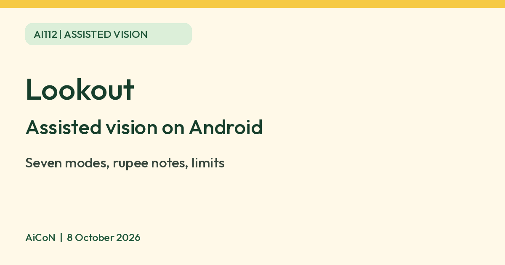

Lookout: Google app that describes the world for low vision
Lookout is a free Google app for Android that uses your phone camera to read text, identify banknotes including Indian rupees, and describe images aloud. Google built it for people who are blind or have low vision, and says Explore mode is beta and less accurate.

What it is
Lookout is a Google app for Android. Google's Play listing says it uses computer vision and generative AI to help people who are blind or have low vision with everyday tasks, such as reading text and documents, sorting mail and putting away groceries. You point the phone camera and Lookout speaks what it finds. It is also handy for anyone who wants text read aloud from a camera.
The seven modes
| Text | Point at signs or mail and hear the text read aloud. Lookout alerts you when no text is detected. |
|---|---|
| Documents | Capture a whole page of text or handwriting. Google's Play listing says it is available in over 30 languages. |
| Explore (beta) | Hear objects, people and text around you. Google's help says it is beta and less accurate than other modes. |
| Currency | Identifies banknotes in US dollars, euros and Indian rupees, one note at a time. It does not recognise coins. |
| Food labels | Scans barcodes or the front of a package. Google says it is only available in some countries, so check your phone. |
| Find | Pick an object from a list, such as doors, cups, bottles or bathrooms, and Lookout helps find it. Direction and distance guidance depends on the phone. |
| Images | Capture or share an image and hear a description. Google's Play listing says image descriptions and Q&A are available globally in English only. Follow-up questions are listed for English in the US, UK or Canada. |
How to start
- Install Lookout - Assisted vision from Google Play.
- Open it by tapping the app or saying "Hey Google, start Lookout".
- Watch the welcome tutorial, agree to the terms and allow camera access.
- Choose a mode from the menu at the top left. Hold the phone with the camera facing outward.
Limits to know
- Poor lighting, blur, low resolution and objects covering the subject can affect image descriptions, according to Google's help.
- Do not rely on it alone for medicine labels, cooking safety, money handling or crossing roads. Ask a person to confirm anything important.
- The Play listing says it runs on Android 6 and above and recommends 2GB or more RAM.
- We did not check the Indian Play price page, and we quote no INR price. Google's pages do not state one. We saw no iPhone version on Google's pages.
Frequently asked questions
Does it recognise Indian rupees?
Google lists Indian rupees in Currency mode, with US dollars and euros. It does not recognise coins.
Does it work in Hindi or Malayalam?
Google's Help page lists Hindi, Bengali, Gujarati, Kannada, Marathi, Tamil and Telugu among its supported languages. Malayalam is not listed. Text, Documents and Explore have language settings, but we did not test Indian-language reading accuracy.
Is Explore mode reliable?
Google says it is beta and less accurate than other modes.
Is it only for blind users?
Google built it for people who are blind or have low vision. Anyone can install it.
Sources: Google Help: Use Lookout to explore your surroundings, Google Play: Lookout - Assisted vision. Checked 8 October 2026.